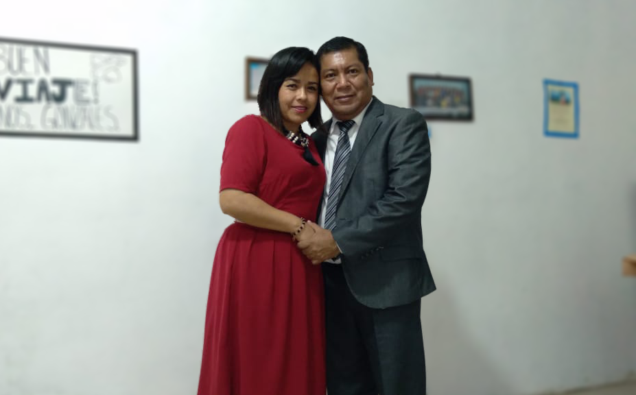

20 Aniversario
Si estás leyendo estas líneas, es porque tu apreciable familia ha sido invitada a que nos acompañe a nuestro 20 ° aniversario el día 13 de marzo a las 7:30 pm, por la plataforma zoom para celebrar y recordar los bonitos momentos de nuestros 20 años de matrimonio, que gracias a Jehová y al fuerte lazo del amor hemos vivido (Colosenses 3:14).
Porque las mejores cosas de la vida merecen ser compartidas, por ello agradeceremos mucho su presencia.
Por favor, tomen nota de las siguientes recomendaciones
Programa
- 7:30 PM: Bienvenida: Palabras de bienvenida por parte del matrimonio González Lara
- Juego 1.- ¿Cuánto conocen al matrimonio González Lara?
- Juego 2.- ¿Cuánto conoce a su cónyuge?
- Después de terminar los juegos, se partirá el pastel y comeremos algunos refrigerios con todos los invitados (Inmediatamente después de partir el pastel, pasaremos al primer video)
- Video parte 1: ¿Cómo nos conocimos.........?
- Invitados interpretarán algunas canciones al matrimonio González
- Palabras de felicitaciones por parte de los invitados y familiares
- Video parte 2: ¿Y después de la boda qué...?
- Canción dedicada por parte del esposo y carta dedicada por parte de la esposa
- Comienza la música para bailar, y acompañar al matrimonio
- Se les dará 5 minutos para que muestren sus pancartas de felicitaciones
- 10:00 PM: Palabras finales de agradecimiento y despedida por parte del matrimonio González
- “Envío de un regalo virtual por el zoom, a todos los invitados”
Requisitos
- Tener descargada la plataforma zoom en su dispositivo
- Poner bocinas, para que escuchen bien este convivio y lo disfruten
- Tener a la mano un pequeño cuaderno y marcador negro, para participar en los juegos
- Mesa con refrigerios o postres, para comer con el matrimonio, cuando partan el pastel
- Ropa digna y apropiada para bailar y su pista de baile
- Utilicen solo una conexión de zoom por familia por favor, pues serán reducidas las conexiones
- Que disfruten el convivio